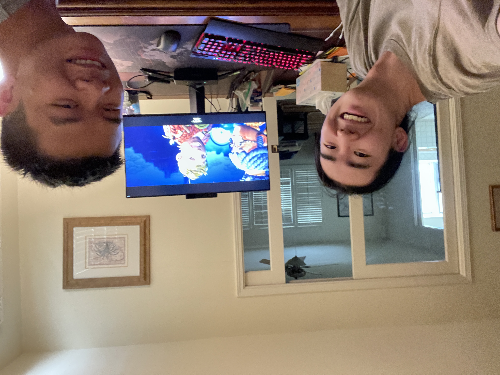

Ongoing Journey - June 2022
Life Updates
Cold Showers, Grit
PlaceholderStarted taking cold showers, felt little difference three weeks past.
First time doing it, remember standing at the tub, slowly turning the knob right, with the temperature drop I immediately started shivering, gasping for air, heart beating more noticeable in the chest, every inch of my skin closing, my body clamped together to trap the lingering heat.
None of these reactions lingered after a week, though other than being more prone to cold, the shower now felt, normal almost.
After three weeks, so far no significant up or downside, despite polar opposite views, one end papers indicating healthier body, on the other my mom shouting ‘啊这么多寒气再这么洗下去你肾要没了’ everytime I come out.
‘Really have to try it yourself before making judgment’ was the biggest takeaway, though it may be more of a mental shift, this sense of, doing something I am afraid of, actively making life less comfortable and actively adapt, Xiaohan mentioned this phrase called ‘grit’.
Asking for Help, Non Zero Sum Game
'能把双人成行玩成分手厨房，真的只有和你了'Played It Takes Two with Steve, afterwards chatted about life, post college living, job hunt and writing resumes, and that’s when he offered to help.
As always, first thought immediately goes towards ‘how I am supposed to pay back’. Helping others felt like, a burden to me, knowing that I want to pay it back at some point.
Said that to Steve and he shrugged, thought for a bit, ‘you can always pay me back later, wasn’t looking for payback in the first place’ he said.
Nicole said accepting/trust may be the best for the person offering too, thought more on making the relationship mutually beneficial, making the cake bigger.
Curiocity, Kiwi
Chatting on Xiaohan’s upcoming study abroad, when introducing Shandong Normal University she went ‘why does 师范 translates to normal in english’.
Searched it up, turns out ‘normal’ was a borrowed word from French, as its first higher education institute was named ‘École Normale Supérieure’, later adapted by the rest of the world.
Less about the answer, people I met from the university tend to share this, almost child-like curiosity. Nancy took a gap year and learned Crypto, Chen spent weeks experimenting with the same recipes, Elliot coding 4 versions of an exercise before publishing.
When chatting with others I would sometimes have a voice in my quiet mind, screaming at me to ask follow ups, the smallest details my counterpart said. Perhaps the same gist here, but on things.
About 3 days later, saw a box of kiwi at the grocery store and searched the name’s origin, apparently kiwi was originated from China, wasn’t until it was exported to New Zealand that it got the name ‘kiwi’, as it’s similar to the kiwi bird on that land.
Learning, connecting, teaching
有一个很土的词儿叫「不忘初心」，大概也就是这么一个定义：回到你最初的需求，调整一种更合理的方式去为之努力，不要用「改变」来代替「纠正」。
Via 情绪自救：把「自己」从情绪深渊中拯救出来. Not related to the thoughts below, just thought that’s something I would say if this topic ever came up again.
Was chatting with Nicole about upcoming job hunt, our aspirations, goals in life.
Sometimes im like hm why do i care so much about getting a very good internship is it bc i want to or also other ppl
Via Nicole. Shared similar feelings, but unable to translate them into thoughts. It’s almost like, finding my own car at the parking lot, after getting groceries lol, I have the memory of parking it, though not sure where exactly it’s at.
Listening is not the same as expressing, wish I could better express my thoughts and feelings. Thinking now, someone that say what’s on their mind, injects emotions and keeps counterparts engaged, people I know have already shown me how.